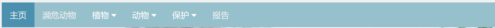
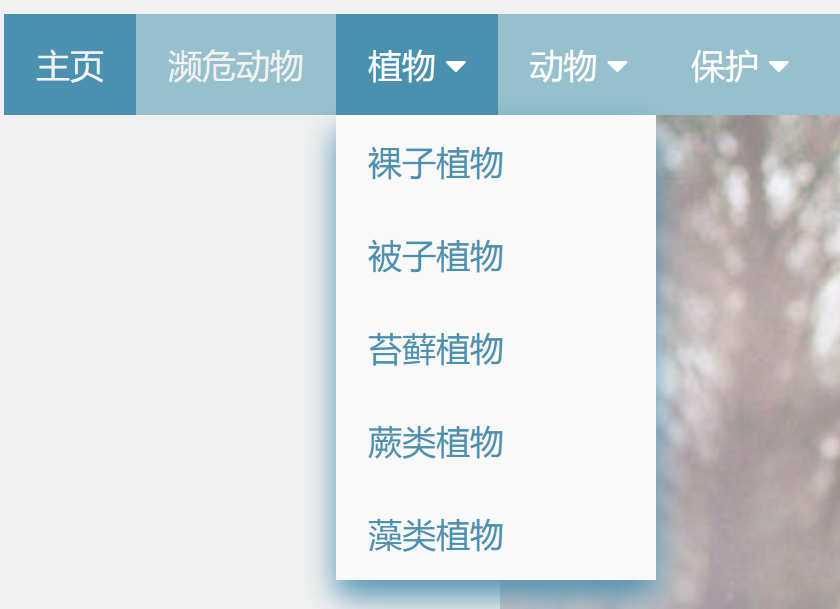
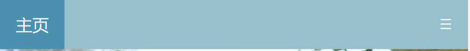
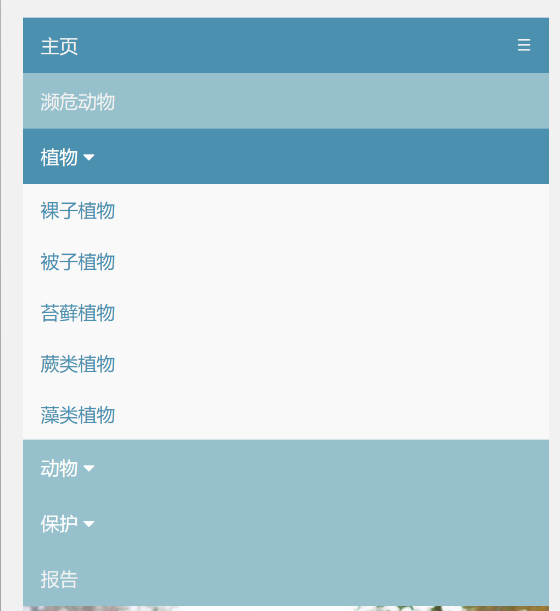
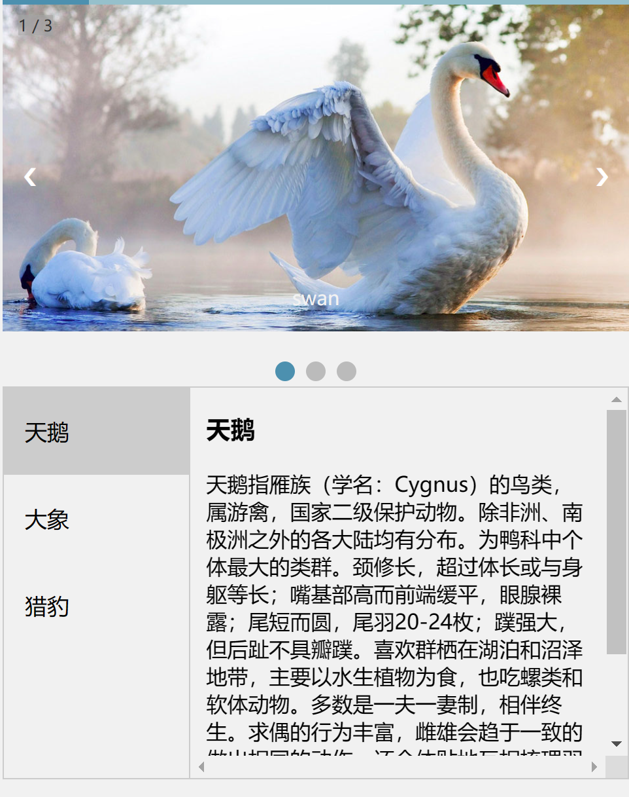
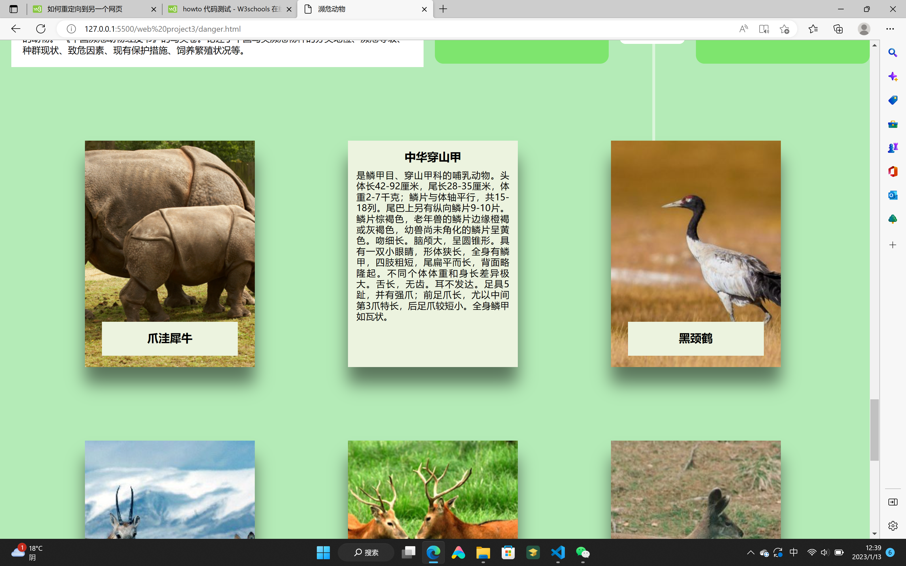

| 小组名单 | 负责页面 | 页数 |
|---|---|---|
| 郑芷柔 0223311 | 主页，保护，报告页面 | 3张（除主页，报告页） |
| 梅好 0223788 | 植物类页面 | 5张 |
| 刘霞波 0223607 | 动物类，濒危动物页面 | 4张 |
报告
网站主题：
生物科普性网站，介绍一些动植物
主要为动植物图片和介绍，通过本网页了解更多动植物
网站设计：
导航栏处链接所有子网页
 一张图片为背景，页面顶部放一张图片，页面主体分为两个板块，分别是文字介绍和卡片展示，页面两旁有固定的动画。在页面宽度小于900px时，不显示背景图，增加了背景颜色，还将文字介绍和卡片展示的flex效果改变。
网站内容：
用到css技术，字体、字型的改变，制作了两个动画，文字的隐藏。
遇到困难：因为页面有背景图，会导致一些页面的文字阅读起来不舒适，在尝试多种颜色字体后，最后采用文字描边的方法解决。卡片大小是以px规定的，在改变视图窗口大小时，卡片大小无法随设置的视图窗口大小改变而改变，最后改用rem，用不同的font-size大小，使文字和卡片大小随之改变。自我评价：只用到了css技术，但对css的使用还有很多不了解，所以在制作过程中处于一边摸索一边学习的状态，对js不太会运用。 在设置响应式设计的时候，一开始对于js运用非常不熟练，特别是导航栏设置和轮播图处，在网上搜索了很多很多代码，但是每次打完代码之后效果都不是自己想要的，反复尝试很多次，也试过不同的代码，但是也没什么用，后来意识到不知道代码的含义就只是复制其他人的代码，到最后也不知道如何更改对于制作网页没有任何帮助，所以在最后还是慢慢理解每段代码的含义，然后再进行更改。
在过程中尝试过使用Bootstrap来做网页，确实很轻松，只需要写html就行，连css都只是外部链接就行，但是最后并没有选择使用Bootstrap，虽然简单轻松，但是并不能让自己运用并学习到更多web的相关知识
总结
在制作的过程中每个细节的修改需要极具耐心，将每个部分修改成刚好合适的大小、颜色等。对于web的学习应该继续精进。
组内所有人都在制作网页上花费了很多时间和精力。首先我们制作的是科普类的网站，很多网页都要搜集很多图片，还要去找很多资料。也花了大量时间去做出更好的网页效果。在学习web的路上我们遇到了很多磕磕绊绊，但是都尽力去解决。目前还有很多不足的地方，也会在之后的学习中不断改正
大部分网页都可以通过网页底部的按钮回到首页，其他则是通过侧边栏或导航栏的首页回去
其他备注
本网页是响应式设计，电脑端手机端都可查看
导航栏设计
 主页轮播图设计及下方的对应介绍
报告右下角/回到顶部/设计
侧边栏定位设计，点击标题回到对应位置
子网页
水生动物：鼠标放到动物处产生卡片旋转翻页效果，整体以蓝色为主

陆地动物：鼠标放到动物处产生一个名片的效果，整体以陆地色为主
两栖动物：鼠标放到动物处产生card平滑覆盖效果，整体也绿色为主

濒危动物：鼠标放到动物处产生三个效果分别是响应式卡片悬停效果、手风琴效果、卡片显示动画覆盖效果，添加时间轴等元素